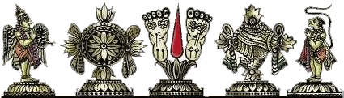

| लाल किताब | |
|---|---|
 |
लाल किताब एवं संतान योगकुण्डली का पांचवा घर संतान भाव के रूप में विशेष रूप से जाना जाता है (The fifth house of the Lal Kitab stands for progeny). ज्योतिषशास्त्री इसी भाव से संतान कैसी होगी, एवं माता पिता से उनका किस प्रकार का सम्बन्ध होगा इसका आंकलन करते हैं |
लाल किताब में कालसर्प दोष (Kalsarp Dosha according to Lalkitab)वैदिक ज्योतिष के समान लाल किताब भी भविष्य जानने की एक विधा है.लाल किताब में ग्रहों के योग और उनके फल के सम्बन्ध में अपनी मान्यताएं है.ज्योतिष की इस विधा में भी कालसर्प है और इसका फल एवं उपाय है लेकिन कालसर्प को देखने का नजरिया अलग है.आइये हम भी लाल किताब से कालसर्प को जानें |
|
 |
लाल किताब में ग्रहों का उपाय और इलाज (Remedial methods for planets In Lal Kitab)पपहले घर मे़ बृ्हस्पति(Jupiter in the first house) शुभ फल देने वाला माना गया है परन्तु सातवां घर खाली होने के कारण बृ्हस्पति शुभ होते हुए भी निष्फल होगा अब ऎसे में शादी होने पर सातवें घर में शुक्र कायम होगा और उसके बाद यह ग्रह अपना शुभ फल देने लगेगा |
लाल किताब में सोया हुआ भाव/ ग्रह (Sleepy House/Planets In Lal Kitab)वैदिक ज्योतिष के अनुसार जब कोइ ग्रह सूर्य के समीप आता है तो अस्त (Retrograde) हो जाता है. इसका आधार ग्रहो के अंश (Degree of Planets) होते हैं. चूकि लाल किताब (Lal Kitab) अंश के सिद्धान्त (Result of Degree) को मानती नही है अतः यहाँ पर भाव/ ग्रह के सोये होने (Sleepy Condition of House/ Planets ) का नियम लागू होता है |
|
लाल किताब में मंग्ल का प्रत्येक भाव के लिए उपाय (Lal Kitab Remedies for Mars in each house)पपहले घर मे़ बृ्हस्पति(Jupiter in the first house) शुभ फल देने वाला माना गया है परन्तु सातवां घर खाली होने के कारण बृ्हस्पति शुभ होते हुए भी निष्फल होगा अब ऎसे में शादी होने पर सातवें घर में शुक्र कायम होगा और उसके बाद यह ग्रह अपना शुभ फल देने लगेगा |
|